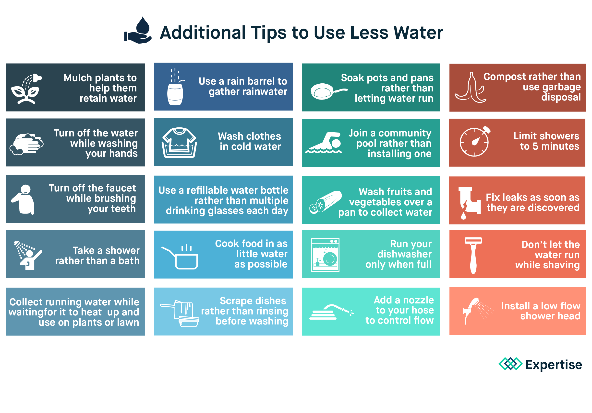

Lesson Introduction
Blog of Yu xin
Content
What is a water footprint?
The water footprint measures the amount of water used to produce each of the goods and services we
use. It can be measured for a single process, such as growing rice, for a product, such as a
pair of jeans, for the fuel we put in our car, or for an entire multi-national company. The water
footprint can also tell us how much water is being consumed by a particular country – or globally
– in a specific river basin or from an aquifer. The water footprint is a measure of humanity’s
appropriation of fresh water in volumes of water consumed and/or polluted.

Water Conservation
Water conservation is the practice of using water efficiently to reduce unnecessary water usage. According to Fresh Water Watch, water conservation is important because fresh clean water is a limited resource, as well as a costly one. As a homeowner, you’re probably already well aware of the financial costs of inefficient water use. Conservation of this natural resource is critical for the environment — and our wallets.
Persuasive Argument
In persuasive or argumentative writing, we try to convince others to agree with our facts, share our values, accept our argument and conclusions, and adopt our way of thinking.
Task
After exploring the WebQuest, you need to work in groups to design a poster for water conservation and write a short paragraph follow the guidelines and samples I provided. We will share our posters and essays in next class.